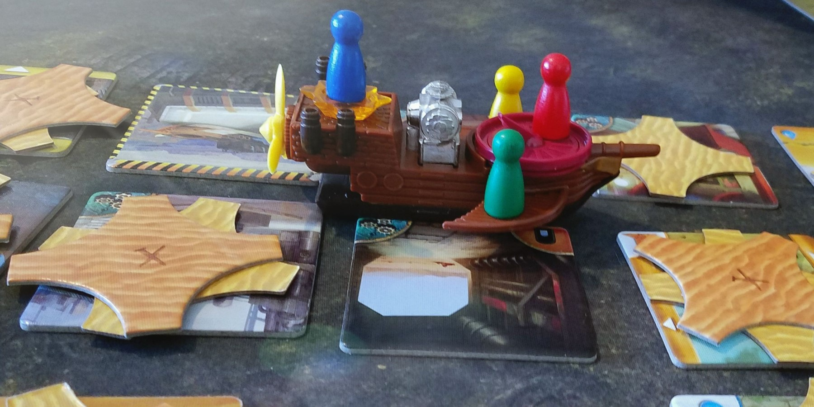
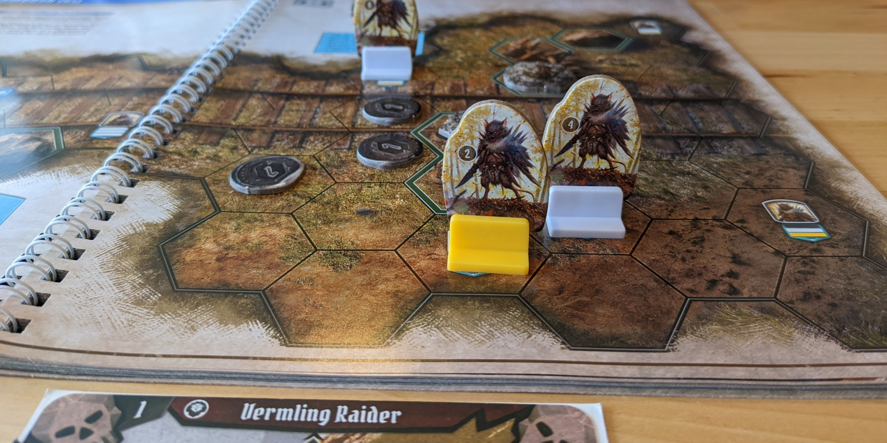

If you like Pandemic, try these 3 board games


Pandemic requires you to work together as a team to contain multiple deadly global outbreaks. This cooperative game has a bit of everything - unique roles, challenging time pressure, and a good level of strategizing required to pull off a win.
We’re recommending games that each build on some of these traits while introducing new mechanics.
Forbidden Desert

Forbidden Desert is another cooperative game by the same designer as Pandemic! You and your friends must search for an ancient flying machine and its missing parts in a treacherous desert, all while surviving sand storms and dehydration.
Dune tiles are laid out in a grid on the table, and all players start together on one of them. On your turn, you will move around the map to uncover artifacts, information, and landmarks by flipping tiles over. Sand gradually accumulates on tiles though, and it must be cleared in order to interact with that tile and progress.
Like Pandemic, each player has a unique ability. The Archaeologist is more efficient at clearing sand, while the Climber is able to move over sandy tiles and take another player with them. On top of this, players must adapt to a deck of storm cards that will intensify the storm, move tiles around, or worse!
Forbidden Desert provides another great teamwork experience and has a fun theme with cool components. Definitely pick this one up if your group wants more gameplay like Pandemic but with a new theme!
Buy Forbidden Desert on Amazon
Small World

Small World is a competitive territory control game where players take control of various factions to grow and protect their presence on the board (similar to how the viruses spread in Pandemic). You will have to manage the ebb and flow of your board presence to win.
Players choose a starting faction and take turns placing all of their tokens on the map - one per territory. When territories are filled, you can spend additional tokens to take over one of your opponent’s adjacent territories. At the end of a round, you score points based on the number of territories you control, plus any bonus points your faction provides.
Each faction also plays differently. For instance, Humans gain bonus points for controlling Farmland, and Orcs gain additional points for conquering enemy territory. You’ll also get to play multiple factions each game, so you must consider all of their powers when targeting territories!
If you love Pandemic but are looking for a competitive experience, Small World is a great option. The theme and mechanics may be different, but the territorial strategy shines in this title too.
Buy Small World on Amazon
Gloomhaven: Jaws of the Lion
Gloomhaven: Jaws of the Lion is a cooperative campaign game where players assume the roles of mercenaries to fight hordes of monsters. Each mercenary plays differently, and there is a ton of content packed into this game.
If you’re thinking “this isn't for me,” we were also unsure at first but have had so much fun with it! It is important to note however that completing this game will likely take 20+ sessions, so you’ll need a group to play with consistently.
As you progress through the campaign, you gain new cards, items, and fun secrets. We won’t spoil any specifics, but they are awesome! This makes every session feel unique, as your characters evolve along with the story. Your enemies also will grow stronger, and losing a scenario is totally possible (and probable!).
In each scenario, you choose which cards to bring along. You’ll play two each turn, and these determine your available actions and turn order. You decide in secret from your friends, however! This detail makes this cooperative game shine. Each player is fully in control of their own character, and no single player directs the strategy. Your character also has their own strengths that only you know best, and the game really comes alive when everyone has mastered their cards.
We’ve played through 80% of the campaign and have had many nail-biting wins (and several losses too). While the mechanics are fairly complex, a great tutorial scenario makes it easy to get started. Give Gloomhaven: Jaws of the Lion a try if you’re even the slightest bit curious!
Buy Gloomhaven: Jaws of the Lion on Amazon
Honorable Mentions
Here are some other great cooperative games that we've also had a lot of fun with.
Betrayal at House on the Hill is a fun semi-cooperative game set in a haunted house. Players move around the house, uncover new tiles to expand the map, and use each room’s special features to improve their character’s stats. It’s “semi-cooperative” because when conditions are met, one player is designated the Traitor and is pitted against the rest! The Traitor has a secret goal to win, and the players have their own. Without knowing the other party’s intentions, you must strategize about where they want to move, if and who they need to kill, and what you can do to stop them. This is a unique game that is a blast to play.
Buy Betrayal on AmazonTranquility is a relaxing cooperative card game with great artwork. A deck of numbered cards is dealt out, and your team takes turns trying to place cards in ascending order. When you place a card next to another, you must discard a number of cards equal to the difference of the two cards’ numbers! You lose if you run out of cards, so you can’t constantly discard. On top of this, you can't talk about anything related to the game, so you must anticipate your friend's actions.
Buy Tranquility on AmazonHanabi is a cooperative card game where you and your team must launch colored fireworks in ascending order from 1 to 5. The catch is that you hold your cards facing away from you, so you can’t see them! Players give each other clues to help with this - you can tell someone they have 3 ones, or you can identify which of their cards are blue. You need to play cards in the right order, but if you make 3 mistakes, it’s game over! Hanabi is quite tricky, but it’s so satisfying when you manage to play all 25 cards correctly and win.
Buy Hanabi on AmazonDid we miss any good recommendations? Have other feedback for us? Send us an email at support@spiralburst.com and let us know!